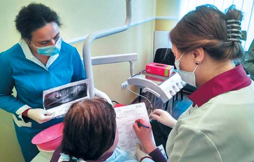
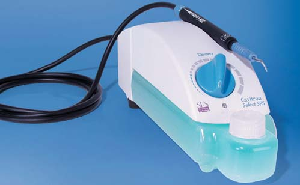
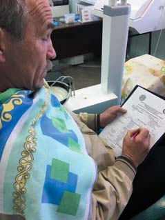
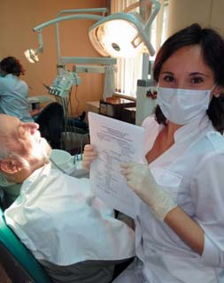
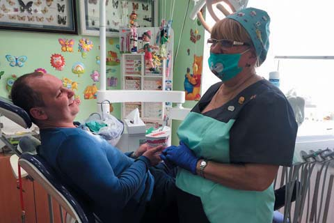
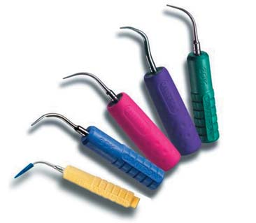
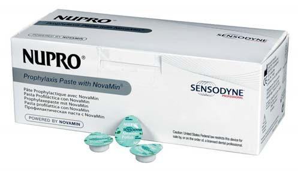
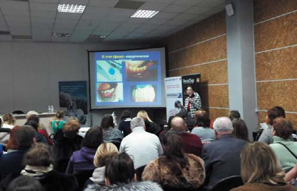
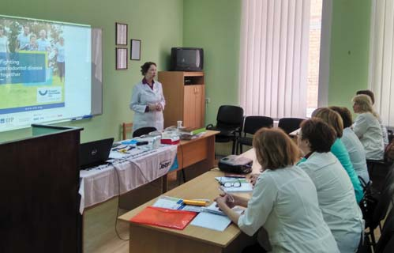

Профілактика · журнал «ДентАрт» 2017 №4
Європейський день здорових ясен в Україні – 2017
EUROPEAN DAY OF HEALTHY GUMS IN UKRAINE 2017
Постійний моніторинг захворюваності тканин пародонту у дорослого населення м. Києва, що його провадять протягом 15 років співробітники кафедри терапевтичної стоматології Інституту стоматології НМАПО ім. П.Л. Шупика, з року в рік засвідчує високу поширеність захворювань пародонту (у віці 20-25 років – до 67%, 30-39 років – до 75%, після 40 років – до 86%) без тенденції до зниження.
Серед основних причин, як і раніше, – нечасте звертання пацієнтів за стоматологічною пародонтологічною допомогою, низька медична грамотність і низька активність більшості населення, відсутність спеціалізованої пародонтологічної допомоги або її недостатній професійний рівень у більшості державних стоматологічних поліклінік. Донині у номенклатурі спеціальностей МОЗ України, незважаючи на зусилля Асоціації лікарів-пародонтологів України протягом останніх 10 років, відсутня спеціальність «лікар-пародонтолог», а відтак у штатному розкладі бюджетних стоматологічних установ немає відповідних посад і діагностику, профілактику та лікування захворювань пародонту часто просто нема кому робити.
Тим часом сьогодні поняття «стоматологічне здоров'я» міцно увійшло в розуміння якості життя. Порушення естетики усмішки, викликане ранньою втратою зубів при захворюваннях пародонту, спричиняє зміну функції всього зубощелепного апарату, що призводить до ускладнень у загальносоматичному статусі людини, ініціюючи появу або загострення наявних хронічних захворювань внутрішніх органів, які формують стан коморбідності. Звідси очевидна значущість проблеми захворювань тканин пародонту в Україні.
Одним із кроків, спрямованих на вирішення цієї проблеми, була організація ВГО «Асоціація лікарів-пародонтологів України» (АЛПУ) проведення 12 травня 2017 року у різних регіонах України та м. Києві Дня здорових ясен. Акція відбувалася в рамках Європейського дня здорових ясен – European Gum Health EFP – 2017, ініційованого Європейською федерацією пародонтологів (EFP). У реалізації програми «День здорових ясен в Україні» у м. Києві взяли участь викладачі кафедри терапевтичної стоматології та лікарі Стоматологічного практичного навчального медичного центру (СПНМЦ) НМАПО ім. П.Л. Шупика, 14 державних стоматологічних установ, що входять до складу ТМО «Київська стоматологія», а також представники всіх регіональних відділень АЛПУ в містах Біла Церква, Вінниця, Дніпро, Запоріжжя, Івано-Франківськ, Київ, Краматорськ, Львів, Одеса, Полтава, Ужгород, Харків. Цю програму підтримали і активно допомогли в її реалізації проректор з науково-педагогічної та лікувальної роботи НМАПО ім. П.Л. Шупика проф. Р.О. Моісеєнко, директор ІС НМАПО ім. П.Л. Шупика проф. О.М. Дорошенко, директор СПНМЦ НМАПО ім. П.Л. Шупика к. мед. н. М.В. Савченко, ТМО «Київська стоматологія» у м. Києві (директор В.А. Мохорєв, заступник директора з медичної частини В.П. Мірза), Українська академія стоматологічного здоров'я (президент – проф. Н.О. Савичук), Українська асоціація гігієністів зубних (президент – проф. О.В. Деньга).
Була розроблена спеціальна програма, спрямована на виявлення захворювань пародонту у дорослого населення України, надання первинної пародонтологічної допомоги з формуванням у пацієнтів мотивації до подальшого комплексного обстеження та лікування виявленої патології у фахівця відповідного профілю.
Для стандартизації умов пародонтологічного обстеження у всіх регіонах України на кафедрі терапевтичної стоматології ІС НМАПО ім. П.Л. Шупика було розроблено спрощену карту пародонтологічного обстеження пацієнтів, що містить мінімальну кількість індексів, але в той же час дозволяє чітко провести диференційну діагностику захворювань тканин пародонту з урахуванням локальних факторів ризику. Усі лікарі-стоматологи, які взяли участь у цій програмі, мали можливість отримати консультацію щодо первинного обстеження пацієнтів безпосередньо на кафедрі або в режимі on line.

Під час акції лікарі-стоматологи не лише провели профілактичний огляд пацієнтів з метою визначення їхнього пародонтального статусу, а й розробили план комплексного лікування для кожного пацієнта, а також надали рекомендації щодо гігієнічного догляду за ротовою порожниною. Завдяки партнерам ВГО АЛПУ – компаніям Lacalut, Colgate, GSK, BishEffect – пацієнтам не тільки було надано інформацію у друкованому вигляді з питань профілактики і лікування захворювань пародонту, а й дано зразки зубних паст цих компаній для апробації у домашніх умовах.
Науково-практична співпраця з компанією Dentsply Sirona істотно розширила цього дня можливості кафедри терапевтичної стоматології та СПНМЦ НМАПО ім. П.Л. Шупика завдяки додатково наданим апаратам – магнітострикційним ультразвуковим скейлерам «Cavitron», що дозволило багатьом пацієнтам провести повноцінні сеанси професійної гігієни ротової порожнини.
Нині три співробітники кафедри є opinion-лідерами компанії Dentsply Sirona: професор Г.Ф. Білоклицька, доцент О.В. Копчак, асистент Е.М. Павленко.

За сучасного рівня технологічного прогресу застосування магнітострикційних ультразвукових апаратів є невід'ємною частиною пародонтологічного прийому. Наш клінічний досвід використання магнітострикційного ультразвукового скейлера Cavitron Select SPS з резервуаром (Dentsply Sirona) засвідчив, що саме цей скейлер дозволяє найменш травматично для твердих тканин зубів і практично безболісно для пацієнта видаляти як над-, так і під'ясенні мінералізовані зубні відкладення. У зв'язку з цим на наших лікарських конференціях, майстер-класах, що проводяться за підтримки компанії Dentsply Sirona, ми настійно рекомендуємо лікарям і зубним гігієністам використовувати для професійної гігієни ротової порожнини саме цей магнітострикційний ультразвуковий скейлер.
Серед незаперечних переваг апарата – можливість автономної роботи, мобільність, зручність у користуванні, а також широкий асортимент зоноспецифічних пародонтологічних і гігієнічних насадок. Пародонтологічні насадки, адаптовані під різні поверхні зубів, включаючи важкодоступні зони біфуркації і трифуркації, використовувані у поєднанні з гігієнічними насадками, дозволяють лікареві на якісно новому рівні провести сеанс професійної гігієни ротової порожнини. Виняткову важливість має також захист лікаря і пацієнта від додаткового інфікування під час роботи, оскільки сфокусована подача води на кінчик насадок практично унеможливлює створення інфікованої аерозольної хмари.


День здорових ясен у стоматологічних закладах ТМО «Київська стоматологія».

Як свідчать наші наукові дослідження, перебіг генералізованого пародонтиту досить часто ускладнюється приєднанням цервікальної гіперестезії.3 У таких ситуаціях особливого значення набуває наявність у цьому ультразвуковому апараті регульованого рівня потужності (BlueZone), який дозволяє лікареві працювати у комфортних для пацієнта умовах, а в поєднанні з підігрівом води в наконечнику забезпечує практично повну блокаду больових відчуттів за наявності цервікальної гіперестезії І-ІІ ступеня тяжкості. У тих випадках, коли перебіг генералізованого пародонтиту ускладнюється цервікальною гіперестезією ІІІ ступеня тяжкості, для повного усунення больових відчуттів під час і після проведення сеансів апаратного скейлінгу можна додатково застосувати лікувально-профілактичну пасту Nupro Sensodyne (Dentsply Sirona) на основі NovaMin (фосфосилікат кальцію, натрію), яка призначена не лише для професійного чищення, полірування зубів до і після процедур видалення зубних відкладень, але і є чудовим десенситайзером, який якісно обтурує відкриті дентинні канальці після втирання пасти протягом 60 секунд. Наявність у пасти Nupro Sensodyne двох ступенів абразивності (для видалення плям із зубної емалі – STAIN REMOVAL і для полірування зубної емалі – POLISH), варіантів з вмістом і без вмісту фторидів, а також різноманітних смакових якостей істотно розширює показання до її застосування у різних клінічних ситуаціях.
Таким чином, можливість використання всіх інноваційних технологій, які використані у пародонтологічній лінійці компанії Dentsply Sirona, дозволила нам не тільки провести професійний скейлінг на якісно високому рівні, а й продемонструвати пацієнтам його ефективність, зняти відчуття страху перед цими втручаннями, мотивувати до подальшого комплексного лікування.

У результаті проведення акції «День здорових ясен» у Києві співробітники СПНМЦ і кафедри терапевтичної стоматології ІС НМАПО обстежили 128 пацієнтів, а в стоматологічних закладах ТМО «Київська стоматологія» було обстежено 220 пацієнтів, які звернулися за допомогою непародонтологічного характеру.
Аналіз 348 пародонтальних карт, проведений з метою виявлення захворюваності тканин пародонту в різних вікових групах населення м. Києва, засвідчив, що у пацієнтів молодого і середнього віку (20-49 років) найчастіше були діагностовані різні форми гінгівіту – 36,3%-51,65% (у 93% – хронічний катаральний гінгівіт) і генералізований пародонтит (ГП), І-ІІ ступеня – у 48,35%-59,42% обстежених. Серед пацієнтів старшого віку (50-69 років) був діагностований ГП (90,7%-93,23%), в основному ІІІ (43,41%-47,46%) і ІІ-ІІІ ступеня тяжкості (35,66%-44,07%). Характерно, що найтяжчий перебіг ГП спостерігався у пацієнтів, котрі курять (22,48% жінок, 42,86% чоловіків), при цьому тяжкість його перебігу була прямо пов'язана зі стажем тютюнокуріння.
Таким чином, паралельно проведені пародонтологічні обстеження пацієнтів у різних стоматологічних закладах м. Києва виявили значну поширеність запальних і запально-дистрофічних захворювань тканин пародонту в різних вікових групах з очевидною залежністю тяжкості виявлених клінічних проявів від гігієнічного стану ротової порожнини, віку обстежених, наявності шкідливої звички – тютюнокуріння. При цьому слід підкреслити повну адекватність результатів, отриманих у спеціалізованих стоматологічних закладах (кафедра терапевтичної стоматології та СПНМЦ ІС НМАПО ім. П.Л. Шупика) і 14 стоматологічних закладах ТМО «Київська стоматологія».


Гігієнічні і зоноспецифічні пародонтологічні насадки до 30 кГц магнітострикційних ультразвукових скейлерів (Dentsply Sirona). Лікувально-профілактична паста Nupro Sensodyne (Dentsply Sirona).


Семінари та майстер-класи ведуть викладачі кафедри терапевтичної стоматології ІС НМАПО ім. П.Л. Шупика.
Реалізація програми «Європейський день здорових ясен» у м. Києві засвідчила результативність тісної співпраці кафедри та лікарів практичної охорони здоров`я. Ми багато робимо для того, щоб кожен лікар-стоматолог, який прийшов для підвищення своєї кваліфікації на кафедру терапевтичної стоматології ІС НМАПО ім. П.Л. Шупика, був переконаний, що захворювання пародонту можна успішно лікувати, зберігаючи при цьому якість життя наших пацієнтів на високому рівні.
Щомісяця при підвищенні своєї кваліфікації на кафедрі терапевтичної стоматології лікарі-стоматологи отримують ексклюзивну можливість, завдяки нашій тісній співпраці з компанією Dentsply Sirona, пройти навчання за новітніми технологіями, заснованими на досягненнях світових ендодонтистів, фахівців у мистецтві реставрації та професійній профілактиці.
Розробка єдиного алгоритму діагностики та надання лікувально-профілактичної допомоги при генералізованих захворюваннях тканин пародонту, інтеграція спеціалізованої пародонтологічної допомоги у загальну систему надання стоматологічної допомоги, включаючи організації приватної форми власності, – ось та основа, яка дозволить знизити захворюваність на генералізований пародонтит, підвищити відсоток реабілітованих пацієнтів і підтримати пародонтологічне здоров'я нації.
Література
- Beloclitskaya G.F. The mechanisms of the dentine hypersensitivity (DH) and possible ways of its prevention // G.F. Beloclitskaya, O.V. Kopchak/Stomatologia wspolczєsna. – 2008. – №5. – Р. 8-13.
- Білоклицька Г.Ф. Етіологія, патогенез та лікування гіперестезії дентину при захворюваннях тканин пародонту // Г.Ф. Білоклицька, О.В. Копчак/Науковий вісник Національного медичного університету імені О.О. Богомольця. – 2007. – С. 39-40.
- Білоклицька Г.Ф. Основні аспекти етіології, патогенезу, клініки та лікування цервікальної гіперестезії // Г.Ф. Білоклицька, О.В. Копчак/Методичні рекомендації. К., 2008. – 34 с.